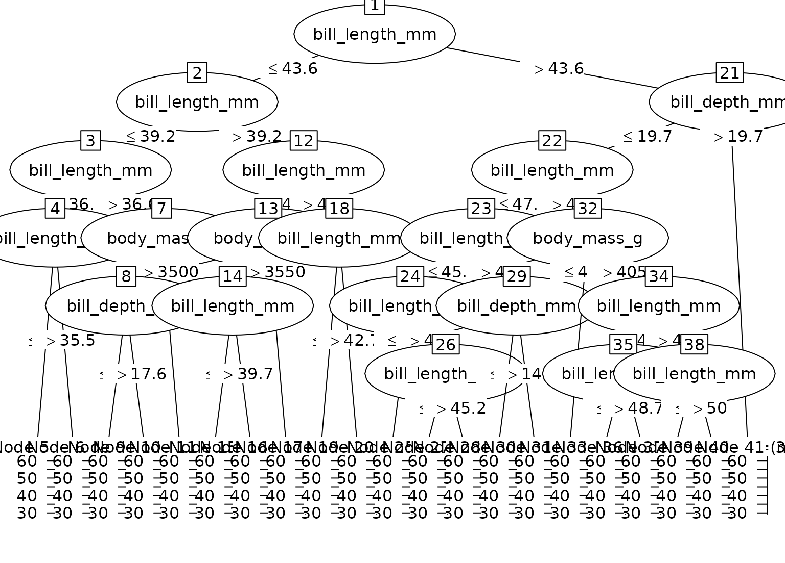

Convert a single tree from a grf (generalized random forests) model to a party object for use with partykit visualization and analysis tools.
Usage
# S3 method for class 'grf'
as.party(obj, tree = 1L, data = NULL, ...)Arguments
- obj
A grf object (e.g.,
regression_forest,causal_forest) from the grf package.- tree
Integer specifying which tree to convert (1-based indexing, default is 1). Must be between 1 and the number of trees in the forest.
- data
Optional data.frame containing the training data. If NULL, will attempt to extract from the grf object (
obj$X.orig), or create a placeholder data.frame. Providing data enables full party functionality.- ...
Not currently used.
Details
GRF tree storage format
The grf package stores trees in a nested list structure, typically accessed
via grf::get_tree(obj, tree). Each tree is represented as nested lists:
is_leaf: Logical, TRUE for terminal nodessplit_variable: 0-based index of variable to split on (internal nodes)split_value: Numeric threshold for split (internal nodes)left_child: Nested list for left subtree (internal nodes)right_child: Nested list for right subtree (internal nodes)Leaf nodes contain prediction information
Node indexing
Internally, grf uses 0-based variable indices
User-facing
treeparameter uses 1-based indexing (R convention)Trees use 0-based indexing internally but we access with 1-based tree number
Examples
if (rlang::is_installed(c("grf", "palmerpenguins"))) {
data(penguins, package = "palmerpenguins")
penguins <- na.omit(penguins)
# Regression forest
set.seed(2847)
rf <- grf::regression_forest(
X = penguins[, c("bill_length_mm", "bill_depth_mm",
"flipper_length_mm", "body_mass_g")],
Y = penguins$bill_length_mm,
num.trees = 3,
num.threads = 1
)
# Convert first tree
party_tree <- as.party(rf, tree = 1L, data = penguins)
print(party_tree)
plot(party_tree)
# Can also work with other grf forest types
set.seed(5193)
cf <- grf::causal_forest(
X = penguins[, c("bill_length_mm", "bill_depth_mm",
"flipper_length_mm", "body_mass_g")],
Y = penguins$bill_length_mm,
W = rbinom(nrow(penguins), 1, 0.5),
num.trees = 3,
num.threads = 1
)
party_tree2 <- as.party(cf, tree = 1L, data = penguins)
}
#>
#> Model formula:
#> ~bill_length_mm + bill_depth_mm + flipper_length_mm + body_mass_g
#>
#> Fitted party:
#> [1] root
#> | [2] bill_length_mm <= 43.6
#> | | [3] bill_length_mm <= 39.2
#> | | | [4] bill_length_mm <= 36.6
#> | | | | [5] bill_length_mm <= 35.5: 34.338 (n = 13, err = 10.7)
#> | | | | [6] bill_length_mm > 35.5: 36.010 (n = 20, err = 2.0)
#> | | | [7] bill_length_mm > 36.6
#> | | | | [8] body_mass_g <= 3500
#> | | | | | [9] bill_depth_mm <= 17.6: 37.814 (n = 7, err = 3.7)
#> | | | | | [10] bill_depth_mm > 17.6: 37.809 (n = 11, err = 5.3)
#> | | | | [11] body_mass_g > 3500: 37.964 (n = 28, err = 15.9)
#> | | [12] bill_length_mm > 39.2
#> | | | [13] bill_length_mm <= 41.6
#> | | | | [14] body_mass_g <= 3550
#> | | | | | [15] bill_length_mm <= 39.7: 39.533 (n = 3, err = 0.0)
#> | | | | | [16] bill_length_mm > 39.7: 40.570 (n = 10, err = 2.1)
#> | | | | [17] body_mass_g > 3550: 40.416 (n = 37, err = 20.5)
#> | | | [18] bill_length_mm > 41.6
#> | | | | [19] bill_length_mm <= 42.7: 42.171 (n = 14, err = 1.3)
#> | | | | [20] bill_length_mm > 42.7: 43.129 (n = 17, err = 1.3)
#> | [21] bill_length_mm > 43.6
#> | | [22] bill_depth_mm <= 19.7
#> | | | [23] bill_length_mm <= 47.6
#> | | | | [24] bill_length_mm <= 45.7
#> | | | | | [25] bill_length_mm <= 44.1: 43.800 (n = 3, err = 0.1)
#> | | | | | [26] bill_length_mm > 44.1
#> | | | | | | [27] bill_length_mm <= 45.2: 44.789 (n = 9, err = 1.1)
#> | | | | | | [28] bill_length_mm > 45.2: 45.356 (n = 16, err = 0.3)
#> | | | | [29] bill_length_mm > 45.7
#> | | | | | [30] bill_depth_mm <= 14.6: 46.546 (n = 13, err = 4.0)
#> | | | | | [31] bill_depth_mm > 14.6: 46.532 (n = 31, err = 8.3)
#> | | | [32] bill_length_mm > 47.6
#> | | | | [33] body_mass_g <= 4050: 50.557 (n = 23, err = 88.4)
#> | | | | [34] body_mass_g > 4050
#> | | | | | [35] bill_length_mm <= 49.2
#> | | | | | | [36] bill_length_mm <= 48.7: 48.200 (n = 12, err = 1.2)
#> | | | | | | [37] bill_length_mm > 48.7: 48.911 (n = 9, err = 0.3)
#> | | | | | [38] bill_length_mm > 49.2
#> | | | | | | [39] bill_length_mm <= 50: 49.527 (n = 11, err = 0.6)
#> | | | | | | [40] bill_length_mm > 50: 51.628 (n = 32, err = 133.5)
#> | | [41] bill_depth_mm > 19.7: 50.714 (n = 14, err = 151.3)
#>
#> Number of inner nodes: 20
#> Number of terminal nodes: 21
